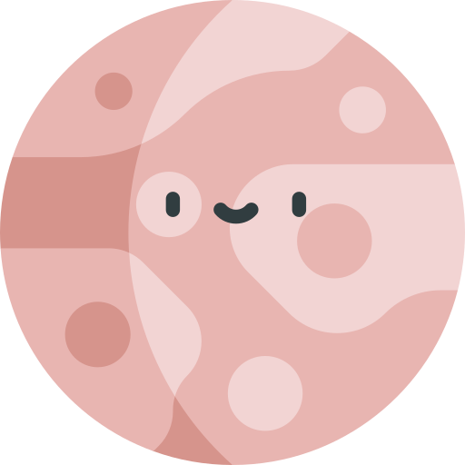

The Solar System is the gravitationally bound system of the Sun and the objects that orbit it, either directly or indirectly. Of the objects that orbit the Sun directly, the largest are the eight planets, with the remainder being smaller objects, the dwarf planets and small Solar System bodies. Of the objects that orbit the Sun indirectly—the natural satellites—two are larger than the smallest planet, Mercury.
Planets
List of planets ordered by distance from the sun:
Mercury
Mercury (0.4 AU from the Sun) is the closest planet to the Sun and on average, all seven other planets. The smallest planet in the Solar System (0.055 M⊕), Mercury has no natural satellites. Besides impact craters, its only known geological features are lobed ridges or rupes that were probably produced by a period of contraction early in its history.
Venus
Venus is the second planet from the Sun. It is named after the Roman goddess of love and beauty. As the brightest natural object in Earth's night sky after the Moon, Venus can cast shadows and can be, on rare occasions, visible to the naked eye in broad daylight. Venus lies within Earth's orbit, and so never appears to venture far from the Sun, either setting in the west just after dusk or rising in the east a little while before dawn.